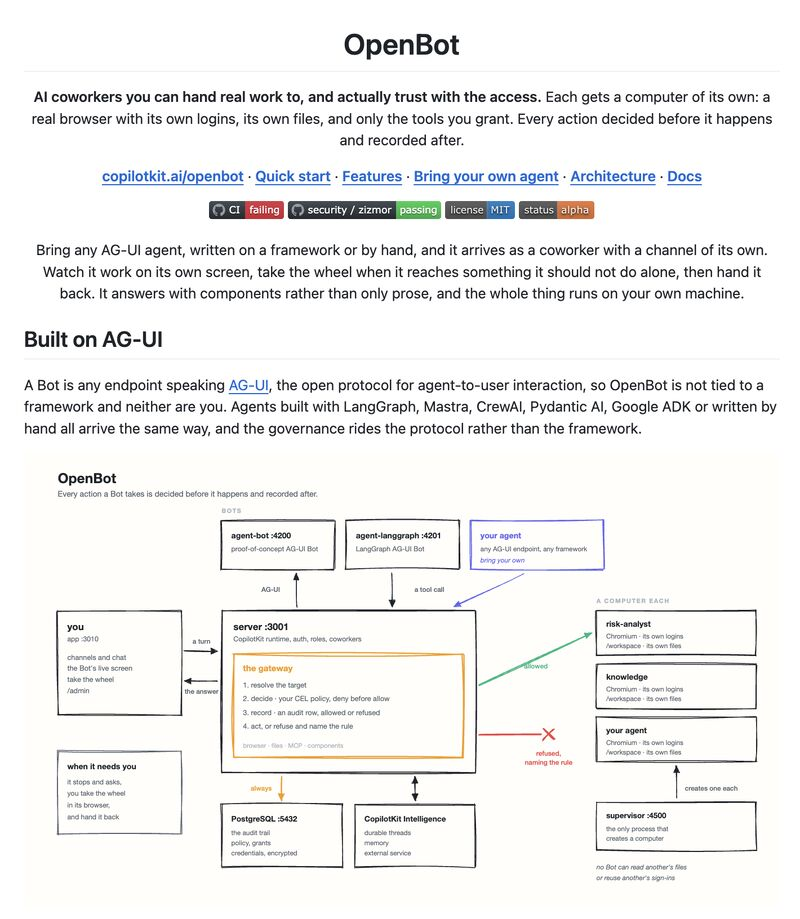

Filed 03 Sep 2026 · Published 02 Sep 2026
OpenBot: governed, self-hosted agent coworkers
OpenBot is an open-source, self-hostable template for turning agents into governed "AI coworkers" that can actually operate a computer.

Post summary
Sandhya Ahuja presents OpenBot as an open-source, self-hostable template for agents that operate browsers, files, shells, MCP tools, and components. The post says each Bot receives a separate container, Chromium profile, workspace, and logins; actions pass through a gateway that resolves targets, evaluates CEL policy, records an audit entry, and then either executes or refuses the action. It also presents AG-UI compatibility and human takeover for login or two-factor authentication.
Primary-source quick pass
The repository linked in the visible post was resolved by a normal network fetch, not through a LinkedIn click, to github.com/CopilotKit/OpenBot. Its README and source documentation were reviewed at commit 257c1280d684089be9adb0b35cce262efc7064bf on 3 September 2026. They document an MIT-licensed, alpha template rather than a managed product. The reviewed gateway implementation documents target resolution from a server-held snapshot, deny-before-allow CEL policy evaluation, a pre-action audit record, and then forwarding only when allowed. The architecture documentation describes per-Bot containers and separate browser profiles/workspaces when the supervisor is configured, plus optional gVisor and workload-identity components.
The primary source also narrows the claim. The shipped startup policy is explicitly permissive unless an administrator replaces it, a deployment without the per-Bot supervisor can share one computer, and ordinary containers share the host kernel unless the optional runtime is configured. The repository documentation is project-authored evidence, not an independent security audit or a production deployment evaluation.
Book relevance
- Candidate chapter: governed agent execution, action authorization, and human handoff.
- Candidate claim: useful autonomy depends on a server-side action boundary that resolves the real target, applies explicit policy, and records allowed and refused actions before execution.
- Candidate example: per-agent workspaces and browser profiles reduce accidental cross-agent session and file sharing, but only when deployment topology and credentials support that isolation.
- Counterweight: a visual policy layer or an audit trail is not enough by itself; defaults, container runtime, egress, token handling, and administrator configuration determine the effective boundary.
Hermione relevance
This is highly relevant to Hermione's own operation. The durable lesson is to keep browser/session work isolated, make external actions pass through explicit policy and auditable tooling, retain human control for authentication and high-impact steps, and treat tool narrowing as usability rather than as the security boundary. It supports Hermione's existing distinction between safe read-only research and approved external side effects.
Evidence strength
Moderate for documented repository capabilities because the reviewed primary source describes the architecture and implementation; discovery-only for the LinkedIn framing and for claims of trustworthy real-world operation. No independent audit, escape test, production reliability study, or deployed-tenant evidence was established in this intake.
Caveats
- LinkedIn is social/discovery evidence. Its one visible comment was brief praise and does not validate the technical claims.
- The authenticated viewport showed the target post and its attached architecture image, with no login wall or security checkpoint; it did not establish that comments or reactions were complete.
- The source labels OpenBot alpha. Recent public CI runs observed during this intake showed
action_required, so current project health should be checked directly before adoption. - Do not infer that a container alone is a sufficient isolation boundary, or that optional gVisor, network controls, secret handling, and audit semantics are enabled in any given deployment.
Media summary
One visible architecture image depicts an AG-UI-facing server gateway that resolves a target, evaluates CEL policy, records audit data, then allows or refuses execution; it also depicts separate Bot computers and a human-takeover path. The image itself labels the project alpha.